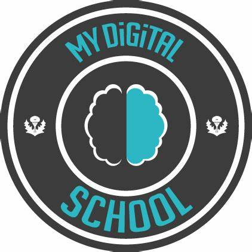
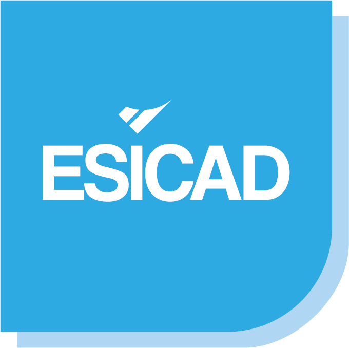
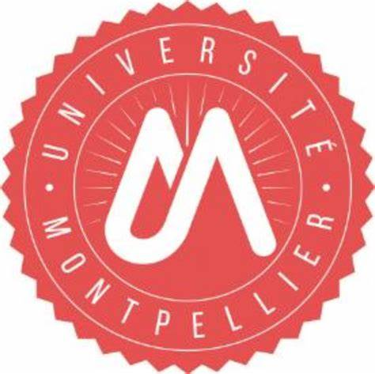

Bienvenue sur mon Portfolio
Ce site a été conçu dans le cadre de ma formation en BTS Services Informatiques aux Organisations (SIO), spécialité SISR (Solutions d'Infrastructure, Systèmes et Réseaux).
Il a pour but de présenter mon parcours, mes compétences techniques et les projets réalisés durant ma formation, tout en facilitant une future collaboration professionnelle.
Que trouverez-vous ici ?
📍 Présentation de mon parcours et de mes écoles
💻 Projets techniques et réalisations académiques
🛡️ Veille technologique et Cybersécurité
📧 Formulaire de contact et réseaux professionnels
BTS SIO
Le BTS SIO (Services Informatiques aux Organisations) est une formation supérieure d'une durée de deux ans qui prépare aux métiers de l'informatique à travers deux parcours distincts. J'ai choisi l'option SISR pour son approche concrète des infrastructures.
SISR : Une expertise axée sur la gestion des réseaux, la cybersécurité, l’administration systèmes et le maintien en condition opérationnelle des infrastructures informatiques.
Présentation
Je m'appelle Albouy Kévin. Passionné par l'informatique depuis toujours, j'ai entrepris une reconversion professionnelle pour concrétiser mon projet dans le numérique.
Après avoir obtenu mon baccalauréat à 34 ans, je suis aujourd'hui en deuxième année de BTS SIO. Mon objectif est de réussir ce diplôme et de poursuivre mes études en Licence ou Bachelor pour approfondir mes compétences en ingénierie système et réseau.
Motivé et résilient, je suis activement à la recherche d'opportunités pour mettre mon dynamisme au service d'une infrastructure innovante.

Expériences Professionnelles
Technicien en informatique (Stage)
Mairie du Grau du RoiMissions techniques au sein du service informatique de la ville. Participation à la maintenance et à l'évolution de l'infrastructure.
Data Analyst / Data Entry Clerk (Stage)
DataPulse Suez NîmesAnalyse de données et gestion des flux d'informations au sein du centre DataPulse.
Mes Formations
Projet pour l'avenir - Bachelor
Bac +3Poursuite d'études envisagée pour approfondir mes compétences en ingénierie système et réseau.
BTS SIO SISR (2ème Année)
MydigitalSchoolFormation spécialisée en infrastructure, systèmes et réseaux. MydigitalSchool offre un parcours moderne axé sur les technologies actuelles et les certifications professionnelles.

BTS SIO SISR (1ère Année)
EsicadÉcole fondatrice de ma formation BTS, Esicad m'a permis d'acquérir les bases solides en informatique de gestion et réseaux, essentielles à ma progression.

DAEU B (Scientifique)
IUT MontpellierPoint de départ de ma reconversion, le DAEU m'a offert les fondations scientifiques nécessaires pour accéder au BTS SIO et concrétiser mon projet professionnel.
